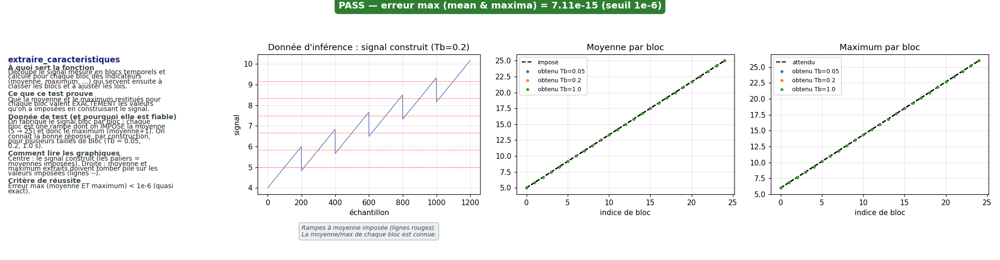
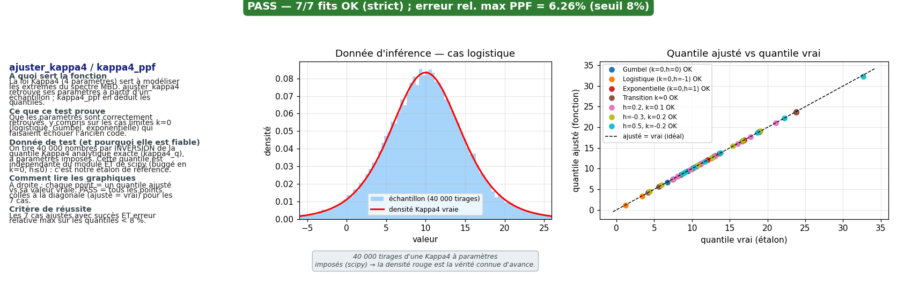
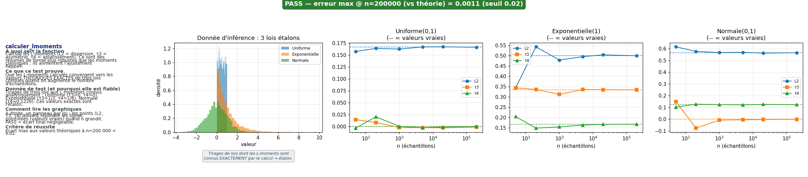
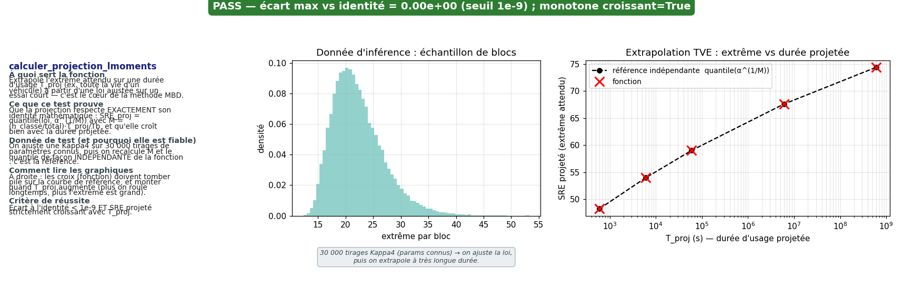
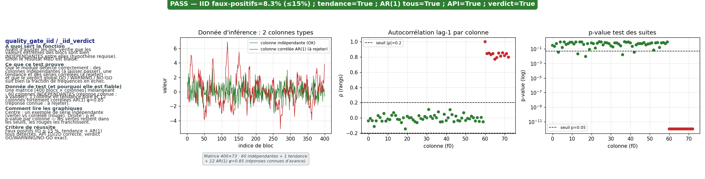
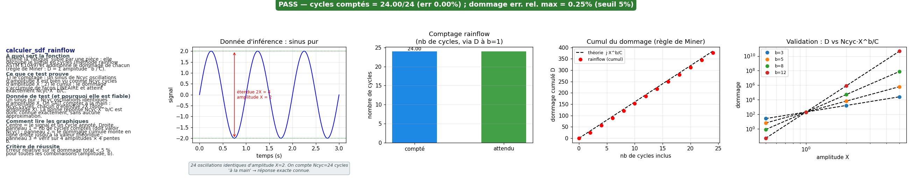
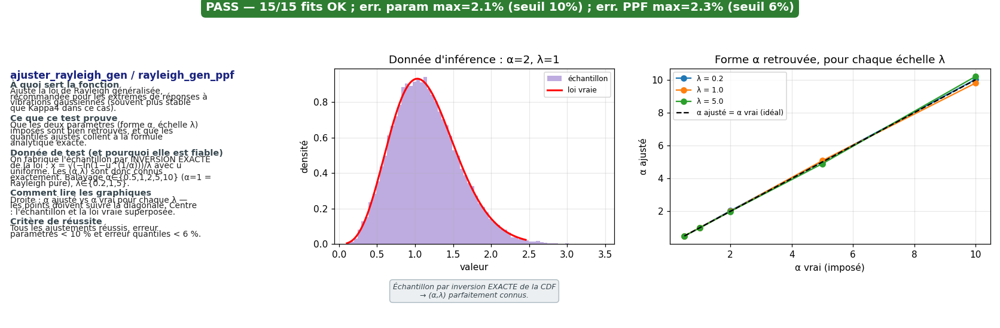
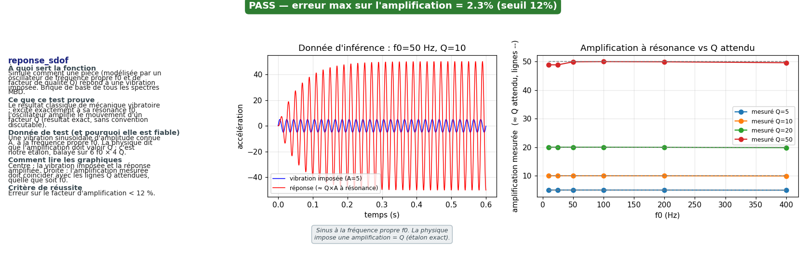
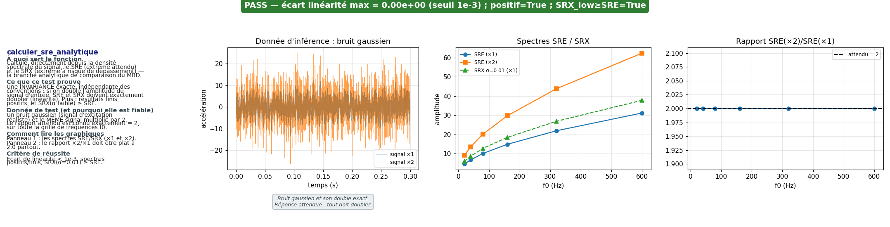

Tests unitaires des fonctions du programme Python MyMBD — 9/9 PASS
Chaque test fabrique une donnée dont la bonne réponse est connue d'avance (théorie exacte ou construction maîtrisée), appelle la fonction, et compare. Le bloc bleu explique en clair ce qui est vérifié ; l'image montre à gauche cette explication, au centre la donnée de test, à droite la fonction comparée à la référence.
PASS — extraire_caracteristiques
extraire_caracteristiques
- À quoi sert la fonction
- Découpe le signal mesuré en blocs temporels et calcule pour chaque bloc des indicateurs (moyenne, maximum, …) qui servent ensuite à classer les blocs et à ajuster les lois.
- Ce que ce test prouve
- Que la moyenne et le maximum restitués pour chaque bloc valent EXACTEMENT les valeurs qu'on a imposées en construisant le signal.
- Donnée de test (et pourquoi elle est fiable)
- On fabrique le signal bloc par bloc : chaque bloc est une rampe dont on IMPOSE la moyenne (5 → 25) et donc le maximum (moyenne+1). On connaît la bonne réponse, par construction, pour plusieurs tailles de bloc (Tb = 0.05, 0.2, 1.0 s).
- Comment lire les graphiques
- Centre : le signal construit (les paliers = moyennes imposées). Droite : moyenne et maximum extraits doivent tomber pile sur les valeurs imposées (lignes --).
- Critère de réussite
- Erreur max (moyenne ET maximum) < 1e-6 (quasi exact).
erreur max (mean & maxima) = 7.11e-15 (seuil 1e-6)

PASS — ajuster_kappa4 / kappa4_ppf
ajuster_kappa4 / kappa4_ppf
- À quoi sert la fonction
- La loi Kappa4 (4 paramètres) sert à modéliser les extrêmes du spectre MBD. ajuster_kappa4 retrouve ses paramètres à partir d'un échantillon ; kappa4_ppf en déduit les quantiles.
- Ce que ce test prouve
- Que les paramètres sont correctement retrouvés, y compris sur les cas limites k=0 (logistique, Gumbel, exponentielle) qui faisaient échouer l'ancien code.
- Donnée de test (et pourquoi elle est fiable)
- On tire 40 000 nombres par INVERSION de la quantile Kappa4 analytique exacte (kappa4_q), à paramètres imposés. Cette quantile est indépendante du module ET de scipy (buggé en k=0, h≤0) : c'est notre étalon de référence.
- Comment lire les graphiques
- À droite : chaque point = un quantile ajusté vs sa valeur vraie. PASS = tous les points collés à la diagonale (ajusté = vrai) pour les 7 cas.
- Critère de réussite
- Les 7 cas ajustés avec succès ET erreur relative max sur les quantiles < 8 %.
7/7 fits OK (strict) ; erreur rel. max PPF = 6.26% (seuil 8%)

PASS — calculer_lmoments
calculer_lmoments
- À quoi sert la fonction
- Calcule les L-moments (L2 = dispersion, τ3 = asymétrie, τ4 = aplatissement). Ce sont des résumés de forme plus robustes que les moments classiques ; ils alimentent l'ajustement Kappa4.
- Ce que ce test prouve
- Que les L-moments calculés convergent vers les valeurs THÉORIQUES EXACTES de trois lois connues quand on augmente le nombre d'échantillons.
- Donnée de test (et pourquoi elle est fiable)
- Tirages de trois lois aux L-moments connus analytiquement : Uniforme (τ3=0, τ4=0), Exponentielle (τ3=1/3, τ4=1/6), Normale (τ4≈0.1226). Ces valeurs exactes sont l'étalon.
- Comment lire les graphiques
- À droite, un panneau par loi : les points (L2, τ3, τ4) doivent rejoindre les lignes pointillées (valeurs vraies) quand n grandit. PASS = écart final négligeable.
- Critère de réussite
- Écart max aux valeurs théoriques à n=200 000 < 0.02.
erreur max @ n=200000 (vs théorie) = 0.0011 (seuil 0.02)

PASS — calculer_projection_lmoments
calculer_projection_lmoments
- À quoi sert la fonction
- Extrapole l'extrême attendu sur une durée d'usage T_proj (ex. toute la vie d'un véhicule) à partir d'une loi ajustée sur un essai court — c'est le cœur de la méthode MBD.
- Ce que ce test prouve
- Que la projection respecte EXACTEMENT son identité mathématique : SRE_proj = quantile(loi, α^(1/M)) avec M = (n_classe/total)·T_proj/Tb, et qu'elle croît bien avec la durée projetée.
- Donnée de test (et pourquoi elle est fiable)
- On ajuste une Kappa4 sur 30 000 tirages de paramètres connus, puis on recalcule M et le quantile de façon INDÉPENDANTE de la fonction : c'est la référence.
- Comment lire les graphiques
- À droite : les croix (fonction) doivent tomber pile sur la courbe de référence, et monter quand T_proj augmente (plus on roule longtemps, plus l'extrême est grand).
- Critère de réussite
- Écart à l'identité < 1e-9 ET SRE projeté strictement croissant avec T_proj.
écart max vs identité = 0.00e+00 (seuil 1e-9) ; monotone croissant=True

PASS — quality_gate_iid / _iid_verdict
quality_gate_iid / _iid_verdict
- À quoi sert la fonction
- Avant d'ajuster les lois, vérifie que les valeurs extrêmes des blocs sont bien INDÉPENDANTES entre elles (hypothèse requise). Sinon le résultat MBD est biaisé.
- Ce que ce test prouve
- Que le module détecte correctement : des colonnes indépendantes (à laisser passer), une tendance et des séries corrélées (à rejeter) ; et que le verdict global GO / WARNING / NO-GO suit bien la fraction de fréquences en échec.
- Donnée de test (et pourquoi elle est fiable)
- Une matrice [400 blocs × colonnes] mélangeant : 60 colonnes INDÉPENDANTES (réponse connue : à valider), 1 colonne en tendance pure et 12 colonnes fortement corrélées AR(1) φ=0.85 (réponse connue : à rejeter).
- Comment lire les graphiques
- Centre : un exemple de série indépendante (verte) vs corrélée (rouge). Droite : ρ et p-value par colonne — les vertes restent dans les seuils, les rouges les franchissent.
- Critère de réussite
- Faux positifs IID ≤ 15 %, tendance + AR(1) tous détectés, API 1D/2D correcte, verdict GO/WARNING/NO-GO exact.
IID faux-positifs=8.3% (≤15%) ; tendance=True ; AR(1) tous=True ; API=True ; verdict=True

PASS — calculer_sdf_rainflow
calculer_sdf_rainflow
- À quoi sert la fonction
- Estime la 'fatigue' subie par une pièce : elle découpe le signal en cycles (méthode rainflow ASTM E1049) et additionne le dommage de chacun (règle de Miner : D = Σ amplitude^b / C).
- Ce que ce test prouve
- 1) le comptage : un sinus de Ncyc oscillations d'amplitude X est bien vu comme Ncyc cycles d'amplitude X ; 2) le cumul : le dommage s'accumule de façon LINÉAIRE et atteint exactement Ncyc·X^b/C.
- Donnée de test (et pourquoi elle est fiable)
- Un sinus pur : Ncyc oscillations identiques d'amplitude X. On SAIT compter à la main : Ncyc cycles, chacun d'étendue 2X (donc amplitude X). La bonne réponse Ncyc·X^b/C est donc connue exactement, sans aucune approximation.
- Comment lire les graphiques
- Centre = le signal et un cycle annoté. Droite, panneau 1 = nb de cycles comptés (doit valoir Ncyc) ; panneau 2 = le dommage cumulé monte en ligne droite jusqu'à la valeur théorique ; panneau 3 = vérif sur 4 amplitudes × 4 pentes b.
- Critère de réussite
- Erreur relative sur le dommage total < 5 % pour toutes les combinaisons (amplitude, b).
cycles comptés = 24.00/24 (err 0.00%) ; dommage err. rel. max = 0.25% (seuil 5%)

PASS — ajuster_rayleigh_gen / rayleigh_gen_ppf
ajuster_rayleigh_gen / rayleigh_gen_ppf
- À quoi sert la fonction
- Ajuste la loi de Rayleigh généralisée, recommandée pour les extrêmes de réponses à vibrations gaussiennes (souvent plus stable que Kappa4 dans ce cas).
- Ce que ce test prouve
- Que les deux paramètres (forme α, échelle λ) imposés sont bien retrouvés, et que les quantiles ajustés collent à la formule analytique exacte.
- Donnée de test (et pourquoi elle est fiable)
- On fabrique l'échantillon par INVERSION EXACTE de la loi : x = √(−ln(1−u^(1/α)))/λ avec u uniforme. Les (α,λ) sont donc connus exactement. Balayage α∈{0.5,1,2,5,10} (α=1 = Rayleigh pure), λ∈{0.2,1,5}.
- Comment lire les graphiques
- Droite : α ajusté vs α vrai pour chaque λ — les points doivent suivre la diagonale. Centre : l'échantillon et la loi vraie superposée.
- Critère de réussite
- Tous les ajustements réussis, erreur paramètres < 10 % et erreur quantiles < 6 %.
15/15 fits OK ; err. param max=2.1% (seuil 10%) ; err. PPF max=2.3% (seuil 6%)

PASS — reponse_sdof
reponse_sdof
- À quoi sert la fonction
- Simule comment une pièce (modélisée par un oscillateur de fréquence propre f0 et de facteur de qualité Q) répond à une vibration imposée. Brique de base de tous les spectres MBD.
- Ce que ce test prouve
- Le résultat classique de mécanique vibratoire : excité exactement à sa résonance f0, l'oscillateur amplifie le mouvement d'un facteur Q (résultat exact, sans convention discutable).
- Donnée de test (et pourquoi elle est fiable)
- Une vibration sinusoïdale d'amplitude connue A, à la fréquence propre f0. La physique dit que l'amplification doit valoir Q : c'est notre étalon, balayé sur 6 f0 × 4 Q.
- Comment lire les graphiques
- Centre : la vibration imposée et la réponse amplifiée. Droite : l'amplification mesurée doit coïncider avec les lignes Q attendues, quelle que soit f0.
- Critère de réussite
- Erreur sur le facteur d'amplification < 12 %.
erreur max sur l'amplification = 2.3% (seuil 12%)

PASS — calculer_sre_analytique
calculer_sre_analytique
- À quoi sert la fonction
- Calcule, directement depuis la densité spectrale du signal, le SRE (extrême attendu) et le SRX (extrême à risque de dépassement) — la branche analytique de comparaison du MBD.
- Ce que ce test prouve
- Une INVARIANCE exacte, indépendante des conventions : si on double l'amplitude du signal d'entrée, SRE et SRX doivent exactement doubler (linéarité). Plus : résultats finis, positifs, et SRX(α faible) ≥ SRE.
- Donnée de test (et pourquoi elle est fiable)
- Un bruit gaussien (signal d'excitation réaliste) et le MÊME signal multiplié par 2. Le rapport attendu est connu exactement = 2, sur toute la grille de fréquences f0.
- Comment lire les graphiques
- Panneau 1 : les spectres SRE/SRX (×1 et ×2). Panneau 2 : le rapport ×2/×1 doit être plat à 2.0 partout.
- Critère de réussite
- Écart de linéarité < 1e-3, spectres positifs/finis, SRX(α=0.01) ≥ SRE.
écart linéarité max = 0.00e+00 (seuil 1e-3) ; positif=True ; SRX_low≥SRE=True
